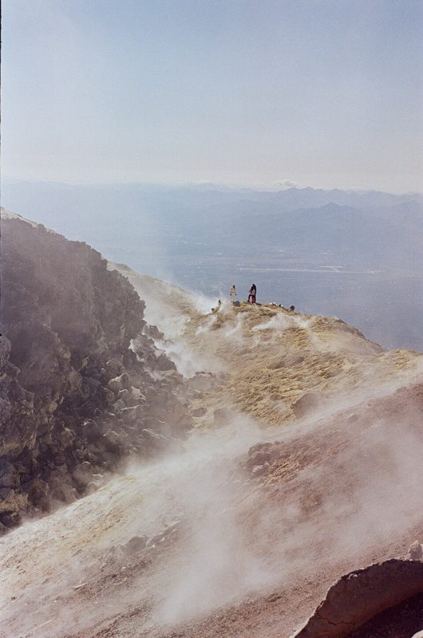

36 EXP. / 필름 / Kodak UltraMax 400
Kodak UltraMax 400
진한 색과 넉넉한 감도를 저렴하게. 일상과 여행을 부담 없이 찍는 범용 컬러 필름입니다.

한눈에 보기
- 감도
- ISO 400
- 종류
- 컬러 네거티브 · C-41 현상
- 판형
- 135
- 이럴 때
- 여행, 일상 스냅, 흐린 날
- 가격
- $9.99
특징
- 채도가 높고 대비가 또렷한 편
- ISO 400이라 흐린 날·그늘에서도 여유
- 35mm 전용, 가격이 저렴
찍을 때 팁
맑은 날과 그늘을 오가도 무난합니다. 실내는 창가처럼 빛이 있는 곳에서.
이 필름에 대해
Gold 200보다 감도가 한 스톱 높아 쓸 수 있는 상황이 넓고, Portra 400보다 훨씬 저렴합니다. 색이 진하고 선명하게 나와 "필름 느낌"을 가볍게 즐기기 좋습니다. 예시 사진은 Zenit ET로 찍은 UltraMax 400입니다.
현상
컬러 네거티브 현상. 국내 대부분의 현상소에서 바로 맡길 수 있고, 35mm 한 롤 현상+기본 스캔은 대략 5천~8천 원, 고해상도 스캔은 1만 원 안팎입니다. 현상소 목록과 가격